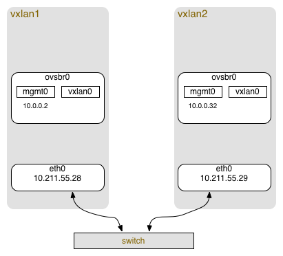

由于项目需求,需要在现有的云平台上支持vxlan技术,用途主要是用在将虚拟机的流量导向给虚拟防火墙和虚拟机流量镜像进行审计
本文介绍的是初步验证可行性的方法,用来将两台物理机上的虚拟机在vxlan上做隧道组网,并实现通讯。
硬件实验环境
由于是验证性的测试,我在我的mac上创建了两个CentOS7的虚拟机,作为逻辑上的物理机使用,用户也可用两台真实物理机替代
硬件配置如下:
vxlan1服务器:
- 1CPU,1GB内存
- 1网卡,网卡名称eth0
- 操作系统CentOS7 minimal,kernel 3.10.0
- IP: 10.211.55.26
vxlan2服务器:
- 1CPU,1GB内存
- 1网卡,网卡名称eth0
- 操作系统CentOS7 minimal,kernel 3.10.0
- IP: 10.211.55.27
网络层面vxlan1 和vxlan2 两台服务器直连在同一台交换机上
软件环境准备
实验环境软件要求:
- kernel 3.12以上,由于CentOS7上是3.10,故需要升级
- Openvswitch 2.3.0以上
下面是升级和软件准备的步骤
kernel升级
由于要升级内核,索性我们直接将其升级至最新的mainline版本,请参考我的另外一篇文章进行升级
升级CentOS7至mainline stable
安装 Openvswitch
安装Openvswitch 请参考我的另外一篇文章,进行安装
CentOS7安装Openvswitch2.3.0 LTS
软件环境准备好后我们开始进入正题,配置vxlan
Openvswitch配置
实验目标
本次实验是要实现两个目标:
- 两台服务器中间通过vxlan构建的隧道做到两个网桥可以互相通信
- 构建在两个网桥上的虚拟机可以互相通信
借了一张图:

vxlan1 服务器配置
创建一个网桥ovsbr0,和一个ovs interface mgmt0,我的网卡名称是eth0,根据不同的服务器,可能网卡名称不同
将eth0作为物理网卡配置IP,ovsbr0作为vxlan所在的网桥
网上教程大部分到这就使用ifconfig配置IP了,但是要使用永久IP的话,还是直接改配置文件比较靠谱,请根据个人情况配置
修改/etc/sysconfig/network-scripts/ifcfg-eth0
1 2 3 4 5 6 7 8 9 10 11 12 13 14 15 16 17 18 19
| TYPE="Ethernet" BOOTPROTO="static" DEFROUTE="yes" PEERDNS="yes" PEERROUTES="yes" IPV4_FAILURE_FATAL="no" IPV6INIT="yes" IPV6_AUTOCONF="yes" IPV6_DEFROUTE="yes" IPV6_PEERDNS="yes" IPV6_PEERROUTES="yes" IPV6_FAILURE_FATAL="no" NAME="eth0" UUID="74ba84c6-71ba-43be-90c9-e503826b2d02" DEVICE="eth0" ONBOOT="yes" IPADDR=10.211.55.28 PREFIX=24 GATEWAY=10.211.55.1
|
再创建文件/etc/sysconfig/network-scripts/ifcfg-ovsbr0
1 2 3 4 5 6
| DEVICE=ovsbr0 ONBOOT=yes DEVICETYPE=ovs TYPE=OVSBridge HOTPLUG=no USERCTL=no
|
同时创建/etc/sysconfig/network-scripts/ifcfg-mgmt0
1 2 3 4 5 6 7 8 9 10
| DEVICE=mgmt0 ONBOOT=yes DEVICETYPE=ovs TYPE=OVSIntPort OVS_BRIDGE=ovsbr0 USERCTL=no BOOTPROTO=none HOTPLUG=no IPADDR0=10.0.0.2 PREFIX0=23
|
修改完成后重新启动网络
1
| $ service network restart
|
配置完成后ovs的网桥如下:
1 2 3 4 5 6 7 8 9 10
| $ ovs-vsctl show Bridge "ovsbr0" Port "ovsbr0" Interface "ovsbr0" type: internal Port "mgmt0" Interface "mgmt0" type: internal ovs_version: "2.3.0"
|
vxlan2 服务器配置
大部分和vxlan1相同 只有在eth0的IP部分和mgmt0的IP不同其他均相同,配置文件如下
修改/etc/sysconfig/network-scripts/ifcfg-mgmt0
1 2 3 4 5 6 7 8 9 10
| DEVICE=mgmt0 ONBOOT=yes DEVICETYPE=ovs TYPE=OVSIntPort OVS_BRIDGE=ovsbr0 USERCTL=no BOOTPROTO=none HOTPLUG=no IPADDR0=10.0.0.32 PREFIX0=23
|
再创建文件/etc/sysconfig/network-scripts/ifcfg-ovsbr0
1 2 3 4 5 6
| DEVICE=ovsbr0 ONBOOT=yes DEVICETYPE=ovs TYPE=OVSBridge HOTPLUG=no USERCTL=no
|
同时创建/etc/sysconfig/network-scripts/ifcfg-eth0
1 2 3 4 5 6 7 8 9 10 11 12 13 14 15 16 17 18 19
| TYPE="Ethernet" BOOTPROTO="static" DEFROUTE="yes" PEERDNS="yes" PEERROUTES="yes" IPV4_FAILURE_FATAL="no" IPV6INIT="yes" IPV6_AUTOCONF="yes" IPV6_DEFROUTE="yes" IPV6_PEERDNS="yes" IPV6_PEERROUTES="yes" IPV6_FAILURE_FATAL="no" NAME="eth0" UUID="74ba84c6-71ba-43be-90c9-e503826b2d02" DEVICE="eth0" ONBOOT="yes" IPADDR=10.211.55.29 PREFIX=24 GATEWAY=10.211.55.1
|
修改完成后重新启动网络
1
| $ service network restart
|
配置完成后ovs的网桥如下:
1 2 3 4 5 6 7 8 9 10
| $ ovs-vsctl show Bridge "ovsbr0" Port "ovsbr0" Interface "ovsbr0" type: internal Port "mgmt0" Interface "mgmt0" type: internal ovs_version: "2.3.0"
|
配置Vxlan隧道
首先配置两个服务器上的属于不同的网络的br1网桥,使其能够通信。
vxlan1服务器配置
配置remote ip为vxlan2服务器的ip 10.211.55.29,命令如下
1
| $ ovs-vsctl add-port ovsbr0 vxlan0 -- set interface vxlan0 type=vxlan options:remote_ip=10.211.55.29
|
vxlan2服务器配置
配置remote ip为vxlan1服务器的ip 10.211.55.28,命令如下
1
| $ ovs-vsctl add-port ovsbr0 vxlan0 -- set interface vxlan0 type=vxlan options:remote_ip=10.211.55.28
|
配置后的ovs 桥如下所示
1 2 3 4 5 6 7 8 9 10 11 12 13 14
| $ ovs-vsctl show 217d712d-860e-460c-9194-0ed5bf776adc Bridge "ovsbr0" Port "ovsbr0" Interface "ovsbr0" type: internal Port "mgmt0" Interface "mgmt0" type: internal Port "vxlan0" Interface "vxlan0" type: vxlan options: {remote_ip="10.211.55.29"} ovs_version: "2.3.0"
|
检查路由表,配置好的路由表如下:
1 2 3 4 5 6 7 8 9
| $ route Kernel IP routing table Destination Gateway Genmask Flags Metric Ref Use Iface default localhost 0.0.0.0 UG 0 0 0 eth0 10.0.0.0 0.0.0.0 255.255.254.0 U 0 0 0 mgmt0 10.211.55.0 0.0.0.0 255.255.255.0 U 0 0 0 eth0 link-local 0.0.0.0 255.255.0.0 U 1002 0 0 eth0 link-local 0.0.0.0 255.255.0.0 U 1004 0 0 ovsbr0 link-local 0.0.0.0 255.255.0.0 U 1005 0 0 mgmt0
|
验证隧道
在vxlan1的服务器上ping vxlan2的mgmt0 ip 10.0.0.32
1 2 3 4 5 6 7 8 9
| $ ping 10.0.0.32 PING 10.0.0.32 (10.0.0.32) 56(84) bytes of data. 64 bytes from 10.0.0.32: icmp_seq=1 ttl=64 time=1.34 ms 64 bytes from 10.0.0.32: icmp_seq=2 ttl=64 time=0.990 ms 64 bytes from 10.0.0.32: icmp_seq=3 ttl=64 time=0.584 ms ^C --- 10.0.0.32 ping statistics --- 3 packets transmitted, 3 received, 0% packet loss, time 2004ms rtt min/avg/max/mdev = 0.584/0.973/1.346/0.312 ms
|
Enjoy!